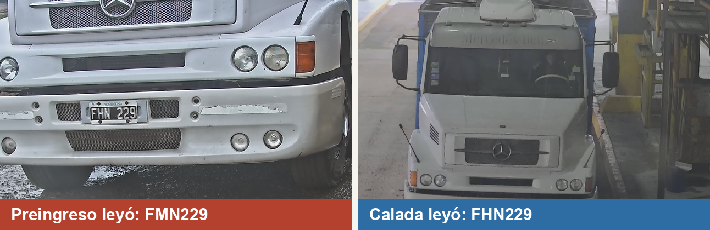
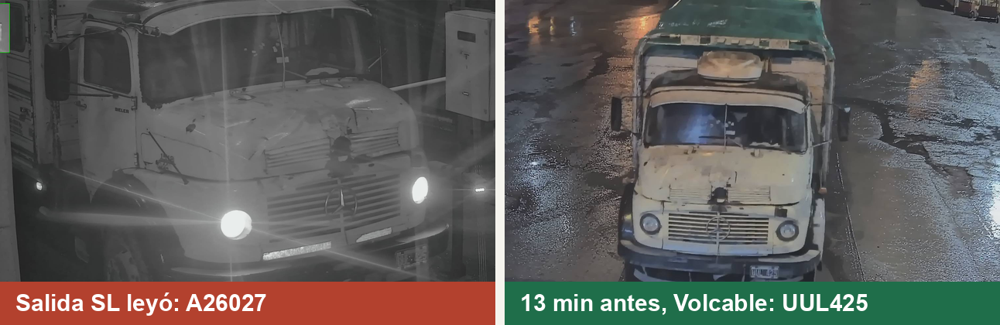
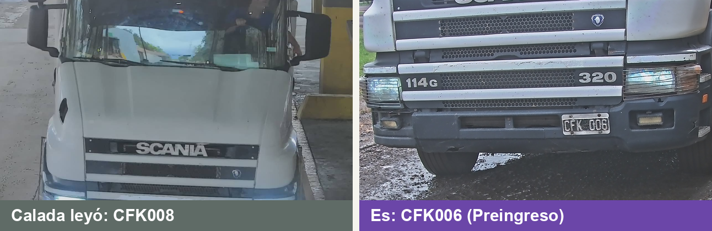
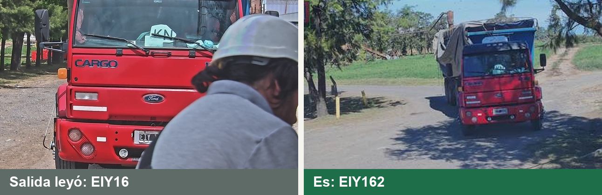
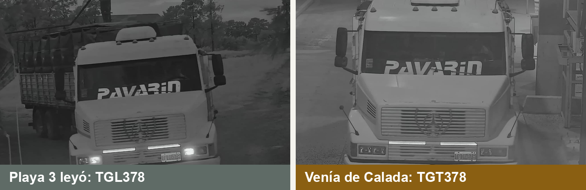
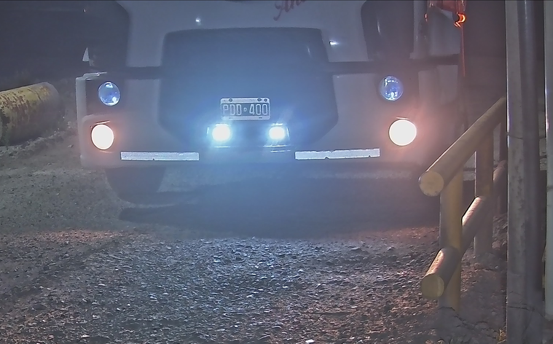

<title>Patentes: de la cámara al recorrido</title>
<link rel="preconnect" href="https://fonts.googleapis.com">
<link rel="stylesheet" href="https://fonts.googleapis.com/css2?family=Plus+Jakarta+Sans:wght@400;500;600;700;800&family=IBM+Plex+Mono:wght@500;600&display=swap">
<style>
/* Layout: láminas 16:9 apiladas, cada una escalada al ancho disponible. Paleta fija del deck (verde NVA + violeta), un solo tema. */
:root{--ground:#DCD9CE;--ink:#17302A;--muted:#5F6B66;--row:#EAE8DF;--line:#C9C5B8;color-scheme:light}
html,body{background:var(--ground);color:var(--ink)}
body{font-family:'Plus Jakarta Sans',Arial,sans-serif;padding-inline:16px;padding-block:24px 48px}
.deck{max-width:1280px;margin-inline:auto;display:flex;flex-direction:column;gap:24px}
.frame{position:relative;width:100%;aspect-ratio:16/9;overflow:hidden;border-radius:8px;box-shadow:0 2px 10px rgba(23,48,42,.18);max-width:100%}
.frame>section{position:absolute;left:0;top:0;width:1920px;height:1080px;box-sizing:border-box;transform-origin:0 0;transform:scale(var(--k,.5))}
.frame *{box-sizing:border-box;margin:0}
.frame table{border-collapse:collapse}
.frame th,.frame td{padding:16px 20px;text-align:left;vertical-align:top;line-height:1.35;border-bottom:1px solid var(--line)}
.frame th{font-weight:700}
.frame ul,.frame ol{padding-left:1.2em}
</style>
<main class="deck">
<div class="frame" aria-label="Lámina 1"><section id="cover" data-transition="fade" style="background:#0B5638;color:#F1F6F2;font-family:'Plus Jakarta Sans', Arial, sans-serif;padding:112px 128px 160px;display:flex;flex-direction:column;gap:28px">

<div style="position:absolute;left:0;top:0;width:1920px;height:1080px;background:linear-gradient(120deg, rgba(11,86,56,0.80) 0%, rgba(14,74,51,0.58) 55%, rgba(46,27,78,0.70) 100%)"></div>


<div style="flex:1"></div>
<div style="position:relative;display:flex;flex-direction:column;gap:28px">
<h1 style="font-size:120px;font-weight:800;line-height:1.05;width:1500px">Patentes: de la cámara al recorrido completo</h1>
<div style="width:160px;height:8px;background:#9CCBAE;border-radius:4px"></div>
<p style="font-size:40px;line-height:1.3;color:#D6E4DA">Nodo Sur · Octubre 2026</p>
</div>
</section></div>
<div class="frame" aria-label="Lámina 2"><section id="sintesis" data-transition="fade" style="background:#F5F4EE;color:#17302A;font-family:'Plus Jakarta Sans', Arial, sans-serif;padding:112px 128px 160px;display:flex;flex-direction:column;gap:48px">
<div style="position:absolute;left:128px;top:72px;width:48px;height:8px;background:#1F6E4A;border-radius:4px"></div>
<div style="position:absolute;left:184px;top:72px;width:24px;height:8px;background:#6B46A8;border-radius:4px"></div>
<div style="display:flex;flex-direction:column;gap:16px">
<p style="font-size:24px;font-weight:700;letter-spacing:3px;text-transform:uppercase;color:#1F6E4A">Síntesis</p>
<h2 style="font-size:60px;font-weight:800;line-height:1.12;width:1664px">La cámara lee bien 75 de cada 100 pasos; el algoritmo completa el resto</h2>
</div>
<div style="display:flex;gap:32px;align-items:stretch">
<div style="flex:1;display:flex;flex-direction:column;gap:28px;background:#FDFCF9;padding:44px 48px;border:1px solid #DCD9CE;border-top:8px solid #2E6DA4;border-radius:16px">
<p style="font-size:24px;font-weight:700;letter-spacing:3px;color:#2E6DA4">SOLO CÁMARAS · TOTAL DE SEPTIEMBRE · PASOS DE CADA 100</p>
<div style="display:flex;flex-direction:column;gap:10px">
<p style="font-size:28px">Lectura exacta</p>
<div style="display:flex;align-items:center;gap:20px"><div style="width:525px;height:64px;background:#1F6E4A;border-radius:6px"></div><p style="font-size:48px;font-weight:800">75</p></div>
</div>
<div style="display:flex;flex-direction:column;gap:10px">
<p style="font-size:28px">Con error o sin lectura</p>
<div style="display:flex;align-items:center;gap:20px"><div style="width:175px;height:64px;background:#6B46A8;border-radius:6px"></div><p style="font-size:48px;font-weight:800">25</p></div>
</div>
<p style="font-size:26px;line-height:1.4;color:#4A5A53">De día 83, de noche 67. En los 25 violetas interviene el algoritmo.</p>
</div>
<div style="display:flex;align-items:center"><p style="font-size:56px;font-weight:800;color:#6B46A8">→</p></div>
<div style="flex:1;display:flex;flex-direction:column;gap:20px;background:#143D2E;padding:44px 48px;border-radius:16px;border-top:8px solid #A48AD8">
<p style="font-size:24px;font-weight:700;letter-spacing:3px;color:#C9B6EE">CÁMARA + ALGORITMO</p>
<p style="font-size:160px;font-weight:800;line-height:1;color:#EEF3EF">99 %</p>
<p style="font-size:30px;line-height:1.35;color:#EEF3EF">de los pasos de cada camión quedan registrados</p>
<p style="font-size:26px;line-height:1.4;color:#CFE0D7">Cuando corrige una patente, acierta 98 de cada 100.</p>
</div>
</div>
<p style="position:absolute;left:128px;bottom:64px;width:1664px;font-size:24px;color:#5F6B66"><b style="color:#6B46A8">NODO SUR</b> · 2</p>

</section></div>
<div class="frame" aria-label="Lámina 3"><section id="alg-universo" data-transition="fade" style="background:#F5F4EE;color:#17302A;font-family:'Plus Jakarta Sans', Arial, sans-serif;padding:112px 128px 160px;display:flex;flex-direction:column;gap:32px">
<div style="position:absolute;left:128px;top:72px;width:48px;height:8px;background:#1F6E4A;border-radius:4px"></div>
<div style="position:absolute;left:184px;top:72px;width:24px;height:8px;background:#6B46A8;border-radius:4px"></div>
<div style="display:flex;flex-direction:column;gap:16px">
<p style="font-size:24px;font-weight:700;letter-spacing:3px;text-transform:uppercase;color:#1F6E4A">Algoritmo · Modelo de nodos</p>
<h2 style="font-size:60px;font-weight:800;line-height:1.12;width:1664px">Cada camión sigue un circuito: sabemos por qué puntos tiene que pasar</h2>
</div>
<div style="display:flex;gap:40px;align-items:stretch">

<div style="flex:1;display:flex;flex-direction:column;gap:20px;justify-content:center">
<div style="display:flex;flex-direction:column;gap:6px;border-left:8px solid #2E6DA4;padding-left:24px">
<h3 style="font-size:32px;font-weight:700;color:#2E6DA4">Nodo</h3>
<p style="font-size:26px;line-height:1.4">Un punto de la planta con cámara: Ingreso, Calada, balanzas, volcables, salidas.</p>
</div>
<div style="display:flex;flex-direction:column;gap:6px;border-left:8px solid #1F6E4A;padding-left:24px">
<h3 style="font-size:32px;font-weight:700;color:#1F6E4A">Circuito</h3>
<p style="font-size:26px;line-height:1.4">El recorrido que corresponde a cada operación. Hay 49, de R1 a R34 y de SL1 a SL15.</p>
</div>
<div style="display:flex;flex-direction:column;gap:6px;border-left:8px solid #6B46A8;padding-left:24px">
<h3 style="font-size:32px;font-weight:700;color:#6B46A8">Paso</h3>
<p style="font-size:26px;line-height:1.4">Cada nodo del circuito por el que el camión tiene que pasar, en orden.</p>
</div>
</div>
</div>
<p style="position:absolute;left:128px;bottom:64px;width:1664px;font-size:24px;color:#5F6B66"><b style="color:#6B46A8">NODO SUR</b> · 3</p>

</section></div>
<div class="frame" aria-label="Lámina 4"><section id="universo-avanza" data-transition="fade" style="background:#F5F4EE;color:#17302A;font-family:'Plus Jakarta Sans', Arial, sans-serif;padding:112px 128px 160px;display:flex;flex-direction:column;gap:32px">
<div style="position:absolute;left:128px;top:72px;width:48px;height:8px;background:#1F6E4A;border-radius:4px"></div>
<div style="position:absolute;left:184px;top:72px;width:24px;height:8px;background:#6B46A8;border-radius:4px"></div>
<div style="display:flex;flex-direction:column;gap:16px">
<p style="font-size:24px;font-weight:700;letter-spacing:3px;text-transform:uppercase;color:#1F6E4A">Algoritmo · El universo conocido avanza</p>
<h2 style="font-size:56px;font-weight:800;line-height:1.12;width:1664px">Cada camión que entra se suma a la lista; cada paso lo mueve al siguiente punto</h2>
</div>
<div style="display:flex;gap:20px;align-items:flex-start">
<div style="width:470px;display:flex;flex-direction:column;gap:10px">
<h3 style="font-size:28px;font-weight:700">1 · Preingreso</h3>
<p style="font-size:24px;color:#5F6B66">Entran 5 camiones, 09:10 a 10:59</p>
<div style="display:flex;flex-direction:column;gap:10px;border:3px dashed #1F6E4A;border-radius:16px;padding:14px">
<p style="font-size:24px;font-weight:800;letter-spacing:2px;color:#1F6E4A">UNIVERSO CONOCIDO</p>
<div style="display:flex;justify-content:space-between;align-items:center;background:#FDFCF9;border:3px solid #1F6E4A;border-radius:12px;padding:10px 18px"><p style="font-size:30px;font-weight:600;font-family:'IBM Plex Mono', Courier New, monospace">IZX624</p><p style="font-size:24px;color:#5F6B66">09:10</p></div>
<div style="display:flex;justify-content:space-between;align-items:center;background:#FDFCF9;border:3px solid #1F6E4A;border-radius:12px;padding:10px 18px"><p style="font-size:30px;font-weight:600;font-family:'IBM Plex Mono', Courier New, monospace">AC475VF</p><p style="font-size:24px;color:#5F6B66">09:47</p></div>
<div style="display:flex;justify-content:space-between;align-items:center;background:#FDFCF9;border:3px solid #1F6E4A;border-radius:12px;padding:10px 18px"><p style="font-size:30px;font-weight:600;font-family:'IBM Plex Mono', Courier New, monospace">AC463RB</p><p style="font-size:24px;color:#5F6B66">10:13</p></div>
<div style="display:flex;justify-content:space-between;align-items:center;background:#FDFCF9;border:3px solid #1F6E4A;border-radius:12px;padding:10px 18px"><p style="font-size:30px;font-weight:600;font-family:'IBM Plex Mono', Courier New, monospace">AE260HD</p><p style="font-size:24px;color:#5F6B66">10:27</p></div>
<div style="display:flex;justify-content:space-between;align-items:center;background:#FDFCF9;border:3px solid #1F6E4A;border-radius:12px;padding:10px 18px"><p style="font-size:30px;font-weight:600;font-family:'IBM Plex Mono', Courier New, monospace">CFK006</p><p style="font-size:24px;color:#5F6B66">10:59</p></div>
</div>
</div>
<p style="font-size:56px;font-weight:800;color:#6B46A8;padding-top:220px">→</p>
<div style="width:540px;display:flex;flex-direction:column;gap:10px">
<h3 style="font-size:28px;font-weight:700">2 · Calada, 11:07</h3>
<p style="font-size:24px;color:#5F6B66">Llega una foto</p>
<div style="display:flex;justify-content:space-between;align-items:center;background:#F6E3DF;border:3px solid #B3412E;border-radius:12px;padding:10px 18px"><p style="font-size:30px;font-weight:700;font-family:'IBM Plex Mono', Courier New, monospace;color:#8E2F20">CFK008</p><p style="font-size:24px;font-weight:700;color:#8E2F20">la cámara leyó</p></div>
<div style="display:flex;flex-direction:column;gap:10px;border:3px dashed #6B46A8;border-radius:16px;padding:14px">
<p style="font-size:24px;font-weight:800;letter-spacing:2px;color:#6B46A8">CANDIDATOS · los que tenían Calada pendiente</p>
<div style="display:flex;justify-content:space-between;align-items:center;background:#DDEBE2;border:3px solid #1F6E4A;border-radius:12px;padding:10px 18px"><p style="font-size:30px;font-weight:700;font-family:'IBM Plex Mono', Courier New, monospace">CFK006</p><p style="font-size:28px;font-weight:800;color:#1F6E4A">85 % · gana</p></div>
<div style="display:flex;justify-content:space-between;align-items:center;background:#FDFCF9;border:3px solid #C9C5B8;border-radius:12px;padding:10px 18px"><p style="font-size:30px;font-family:'IBM Plex Mono', Courier New, monospace;color:#5F6B66">IZX624 · AC475VF</p><p style="font-size:24px;color:#5F6B66">0 %</p></div>
<div style="display:flex;justify-content:space-between;align-items:center;background:#FDFCF9;border:3px solid #C9C5B8;border-radius:12px;padding:10px 18px"><p style="font-size:30px;font-family:'IBM Plex Mono', Courier New, monospace;color:#5F6B66">AC463RB · AE260HD</p><p style="font-size:24px;color:#5F6B66">0 %</p></div>
</div>
</div>
<p style="font-size:56px;font-weight:800;color:#6B46A8;padding-top:220px">→</p>
<div style="flex:1;display:flex;flex-direction:column;gap:10px">
<h3 style="font-size:28px;font-weight:700">3 · Se actualiza</h3>
<p style="font-size:24px;color:#5F6B66">Cada punto espera a otros</p>
<div style="display:flex;flex-direction:column;gap:10px;border:3px dashed #1F6E4A;border-radius:16px;padding:14px">
<p style="font-size:24px;font-weight:800;letter-spacing:2px;color:#1F6E4A">UNIVERSO CONOCIDO</p>
<p style="font-size:24px;color:#5F6B66">Salida espera</p>
<div style="display:flex;justify-content:space-between;align-items:center;background:#DDEBE2;border:3px solid #1F6E4A;border-radius:12px;padding:10px 18px"><p style="font-size:28px;font-weight:700;font-family:'IBM Plex Mono', Courier New, monospace">CFK006</p><p style="font-size:24px;color:#1F6E4A">sale 11:23</p></div>
<p style="font-size:24px;color:#5F6B66">Calada espera</p>
<div style="display:flex;align-items:center;background:#FDFCF9;border:3px solid #1F6E4A;border-radius:12px;padding:10px 18px"><p style="font-size:26px;font-weight:600;font-family:'IBM Plex Mono', Courier New, monospace">IZX624 · AC475VF · AC463RB</p></div>
</div>
</div>
</div>
<div style="position:absolute;left:128px;bottom:64px;width:1664px;display:flex;gap:32px;align-items:center">
<p style="font-size:24px;color:#5F6B66"><b style="color:#6B46A8">NODO SUR</b> · 4</p>
<p style="font-size:24px;color:#1F6E4A"><b>■</b> esperado</p>
<p style="font-size:24px;color:#B3412E"><b>■</b> lectura con error</p>
</div>

</section></div>
<div class="frame" aria-label="Lámina 5"><section id="alg-ecuacion" data-transition="fade" style="display:flex; flex-direction:column; gap:28px; padding:112px 128px 160px; background:#f5f4ee; color:#17302a; font-family:'Plus Jakarta Sans', Arial, sans-serif">
  <div style="position:absolute; top:72px; left:128px; width:48px; height:8px; background:#1f6e4a; border-radius:4px"></div>
  <div style="position:absolute; top:72px; left:184px; width:24px; height:8px; background:#6b46a8; border-radius:4px"></div>
  <div style="display:flex; flex-direction:column; gap:16px">
    <p style="font-size:24px; font-weight:700; letter-spacing:3px; text-transform:uppercase; color:#1f6e4a">Algoritmo · La ecuación</p>
    <h2 style="width:1664px; font-size:60px; font-weight:800; line-height:1.12">Una sola cuenta: qué tan probable es que la foto sea de cada camión</h2>
  </div>
  <div style="display:flex; flex-direction:row; gap:32px; align-items:stretch">
    <div style="display:flex; flex-direction:column; gap:12px; flex:1; justify-content:center; align-items:center; padding:32px 40px; background:#143d2e; border-radius:16px">
      <p style="font-size:40px; font-weight:700; text-align:center; color:#eef3ef">P(camión) = <span style="color:#7cc29c">paso esperado</span> × <span style="color:#c9b6ee">patente</span> × <span style="color:#e3b95e">atributos</span></p>
      <div style="width:900px; height:3px; flex:0 0 auto; background:#bcd3c7"></div>
      <p style="font-size:30px; text-align:center; color:#cfe0d7">la misma cuenta, sumada para todos los camiones esperados</p>
    </div>
    <div style="display:flex; flex-direction:column; gap:12px; width:560px; padding:32px 36px; background:#e3dcf2; border-radius:16px">
      <h3 style="font-size:30px; font-weight:700; color:#6b46a8">Qué significa P(camión)</h3>
      <p style="font-size:26px; line-height:1.4">De 0 a 100 %: la chance de que la foto sea de ese camión y no de otro. Entre todos los candidatos suman 100 %.</p>
      <p style="font-size:26px; line-height:1.4"><b>Gana el más alto</b> y la patente se corrige sola.</p>
    </div>
  </div>
  <div style="display:flex; flex-direction:row; gap:20px">
    <div style="display:flex; flex-direction:column; gap:10px; flex:1; padding:24px 28px; background:#fdfcf9; border:1px solid #dcd9ce; border-radius:12px">
      <h3 style="font-size:28px; font-weight:700; color:#1f6e4a">Paso esperado</h3>
      <p style="font-size:24px; line-height:1.4">¿Le tocaba pasar por ahí, en ese horario? Si sí, suma; si su recorrido no lo permite, resta mucho.</p>
    </div>
    <div style="display:flex; flex-direction:column; gap:10px; flex:1; padding:24px 28px; background:#fdfcf9; border:1px solid #dcd9ce; border-radius:12px">
      <h3 style="font-size:28px; font-weight:700; color:#6b46a8">Patente</h3>
      <p style="font-size:24px; line-height:1.4">Igual: suma todo. Una letra distinta: resta poco. Dos o más: resta mucho. Si no se parece a ninguna, no suma ni resta para nadie.</p>
    </div>
    <div style="display:flex; flex-direction:column; gap:10px; flex:1; padding:24px 28px; background:#fdfcf9; border:1px solid #dcd9ce; border-radius:12px">
      <h3 style="font-size:28px; font-weight:700; color:#8a5f12">Atributos</h3>
      <p style="font-size:24px; line-height:1.4">Marca, color y tipo de vehículo que ve la cámara: si coinciden suman, si no restan.</p>
    </div>
    <div style="display:flex; flex-direction:column; gap:10px; flex:1; padding:24px 28px; background:#fdfcf9; border:1px solid #dcd9ce; border-radius:12px">
      <h3 style="font-size:28px; font-weight:700; color:#2e6da4">«Nuevo en el circuito»</h3>
      <p style="font-size:24px; line-height:1.4">Siempre compite: un camión que no estaba en la lista. Su peso depende del punto: alto en los accesos, casi nulo en volcables o en la balanza de ingreso de San Lorenzo.</p>
    </div>
  </div>
  <p style="position:absolute; bottom:64px; left:128px; width:1664px; font-size:24px; color:#5f6b66"><span style="color:#6b46a8"><b>NODO SUR</b></span> · 5</p>
  
</section></div>
<div class="frame" aria-label="Lámina 6"><section id="candidatos-pelea" data-transition="fade" style="background:#F5F4EE;color:#17302A;font-family:'Plus Jakarta Sans', Arial, sans-serif;padding:112px 128px 160px;display:flex;flex-direction:column;gap:32px">
<div style="position:absolute;left:128px;top:72px;width:48px;height:8px;background:#1F6E4A;border-radius:4px"></div>
<div style="position:absolute;left:184px;top:72px;width:24px;height:8px;background:#6B46A8;border-radius:4px"></div>
<div style="display:flex;flex-direction:column;gap:16px">
<p style="font-size:24px;font-weight:700;letter-spacing:3px;text-transform:uppercase;color:#1F6E4A">Algoritmo · La ecuación aplicada</p>
<h2 style="font-size:56px;font-weight:800;line-height:1.12;width:1664px">Calada leyó CFK008: así se calcula quién es</h2>
</div>
<table style="font-size:26px;width:1664px">
<tr style="background:#143D2E"><th style="width:17%;color:#EEF3EF">Candidato</th><th style="width:12%;color:#7CC29C">Paso esperado</th><th style="width:20%;color:#C9B6EE">Patente</th><th style="width:31%;color:#E3B95E">Atributos</th><th style="width:10%;text-align:right;color:#EEF3EF">Puntaje</th><th style="width:10%;text-align:right;color:#EEF3EF">P</th></tr>
<tr style="background:#DDEBE2"><td><b style="font-family:'IBM Plex Mono', Courier New, monospace">CFK006</b></td><td>Sí · ×1</td><td>5 de 6 iguales · ×0,26</td><td>Blanco ✓ ×1,21 · Scania ✓ ×4,75 · tamaño ✗ ×0,76 = <b>×4,36</b></td><td style="text-align:right;font-weight:700">1,15</td><td style="text-align:right;font-weight:800;color:#1F6E4A">85 %</td></tr>
<tr><td style="font-family:'IBM Plex Mono', Courier New, monospace">IZX624 · AC475VF<br>AC463RB · AE260HD</td><td>Sí · ×1</td><td>Nada en común · ×0,0003</td><td>No se parecen a lo que leyó la cámara</td><td style="text-align:right">0,0003 c/u</td><td style="text-align:right">0 %</td></tr>
<tr style="background:#EAE8DF"><td style="color:#2E6DA4"><b>Nuevo en el circuito</b></td><td>—</td><td>—</td><td>Peso en Calada: un camión que no estaba en la lista</td><td style="text-align:right;font-weight:700">0,20</td><td style="text-align:right;font-weight:700">15 %</td></tr>
</table>
<div style="display:flex;flex-direction:column;gap:12px;align-items:center;background:#143D2E;padding:28px 40px;border-radius:16px">
<p style="font-size:40px;font-weight:700;color:#EEF3EF">P(CFK006) = 1,15 ÷ (1,15 + 0,20 + 0,001) = <span style="color:#7CC29C">85 %</span></p>
<p style="font-size:26px;color:#CFE0D7">Puntaje = paso esperado × patente × atributos. P = su puntaje sobre la suma de todos.</p>
</div>
<p style="position:absolute;left:128px;bottom:64px;width:1664px;font-size:24px;color:#5F6B66"><b style="color:#6B46A8">NODO SUR</b> · 6</p>

</section></div>
<div class="frame" aria-label="Lámina 7"><section id="universo-rescate" data-transition="fade" style="background:#F5F4EE;color:#17302A;font-family:'Plus Jakarta Sans', Arial, sans-serif;padding:112px 128px 160px;display:flex;flex-direction:column;gap:36px">
<div style="position:absolute;left:128px;top:72px;width:48px;height:8px;background:#1F6E4A;border-radius:4px"></div>
<div style="position:absolute;left:184px;top:72px;width:24px;height:8px;background:#6B46A8;border-radius:4px"></div>
<div style="display:flex;flex-direction:column;gap:16px">
<p style="font-size:24px;font-weight:700;letter-spacing:3px;text-transform:uppercase;color:#1F6E4A">Algoritmo · Un camión que no estaba en la lista</p>
<h2 style="font-size:56px;font-weight:800;line-height:1.12;width:1664px">Si aparece uno nuevo, se busca hacia atrás una lectura mal hecha</h2>
</div>
<div style="display:flex;gap:16px;align-items:stretch">
<div style="flex:1;display:flex;flex-direction:column;gap:8px;background:#DCE7F3;border:3px solid #2E6DA4;border-radius:12px;padding:20px 24px">
<p style="font-size:24px;font-weight:700;color:#1F4F7A">1 · CALADA, 15:37</p>
<p style="font-size:26px;line-height:1.35">Lee <b style="font-family:'IBM Plex Mono', Courier New, monospace">FHN229</b>: no está en el universo conocido</p>
</div>
<p style="font-size:48px;font-weight:800;color:#6B46A8;align-self:center">→</p>
<div style="flex:1;display:flex;flex-direction:column;gap:8px;background:#FDFCF9;border:3px dashed #6B46A8;border-radius:12px;padding:20px 24px">
<p style="font-size:24px;font-weight:700;color:#6B46A8">2 · SE BUSCA HACIA ATRÁS</p>
<p style="font-size:26px;line-height:1.35">Lecturas de Preingreso de las últimas horas que no se asignaron a ningún camión</p>
</div>
<p style="font-size:48px;font-weight:800;color:#6B46A8;align-self:center">→</p>
<div style="flex:1;display:flex;flex-direction:column;gap:8px;background:#F6E3DF;border:3px solid #B3412E;border-radius:12px;padding:20px 24px">
<p style="font-size:24px;font-weight:700;color:#8E2F20">3 · APARECE, 14:57</p>
<p style="font-size:26px;line-height:1.35"><b style="font-family:'IBM Plex Mono', Courier New, monospace">FMN229</b>: una letra distinta, H leída como M</p>
</div>
<p style="font-size:48px;font-weight:800;color:#6B46A8;align-self:center">→</p>
<div style="flex:1;display:flex;flex-direction:column;gap:8px;background:#DDEBE2;border:3px solid #1F6E4A;border-radius:12px;padding:20px 24px">
<p style="font-size:24px;font-weight:700;color:#1F6E4A">4 · SE CORRIGE</p>
<p style="font-size:26px;line-height:1.35">Preingreso pasa a FHN229 y el recorrido queda completo</p>
</div>
</div>
<div style="display:flex;gap:40px;align-items:center">

<div style="flex:1;display:flex;flex-direction:column;gap:12px">
<p style="font-size:26px;line-height:1.35">Una letra distinta. Blanco y Mercedes en las dos fotos.</p>
<div style="display:flex;flex-direction:column;gap:6px;background:#143D2E;padding:16px 22px;border-radius:10px">
<p style="font-size:24px;color:#CFE0D7">Paso <b style="color:#7CC29C">×1</b> · Patente <b style="color:#C9B6EE">×0,26</b> · Atributos <b style="color:#E3B95E">×6,26</b></p>
<p style="font-size:30px;font-weight:700;color:#EEF3EF">P = 1,65 ÷ (1,65 + 0,20) = <span style="color:#7CC29C">89 %</span></p>
</div>
</div>
</div>
<p style="position:absolute;left:128px;bottom:64px;width:1664px;font-size:24px;color:#5F6B66"><b style="color:#6B46A8">NODO SUR</b> · 7</p>

</section></div>
<div class="frame" aria-label="Lámina 8"><section id="alg-tesis" data-transition="fade" style="background:#F5F4EE;color:#17302A;font-family:'Plus Jakarta Sans', Arial, sans-serif;padding:112px 128px 160px;display:flex;flex-direction:column;gap:36px">
<div style="position:absolute;left:128px;top:72px;width:48px;height:8px;background:#1F6E4A;border-radius:4px"></div>
<div style="position:absolute;left:184px;top:72px;width:24px;height:8px;background:#6B46A8;border-radius:4px"></div>
<div style="display:flex;flex-direction:column;gap:16px">
<p style="font-size:24px;font-weight:700;letter-spacing:3px;text-transform:uppercase;color:#1F6E4A">Algoritmo · Qué supone y qué logra</p>
<h2 style="font-size:60px;font-weight:800;line-height:1.12;width:1664px">Cuatro supuestos simples, dos resultados medidos</h2>
</div>
<div style="display:flex;gap:40px">
<div style="flex:1;display:flex;flex-direction:column;gap:18px">
<p style="font-size:24px;font-weight:700;letter-spacing:3px;color:#5F6B66">SUPONEMOS QUE</p>
<p style="font-size:28px;line-height:1.4;border-left:8px solid #1F6E4A;padding-left:22px">Por cada punto solo pasan los camiones que lo tienen pendiente en su circuito.</p>
<p style="font-size:28px;line-height:1.4;border-left:8px solid #6B46A8;padding-left:22px">Cuando la cámara se equivoca, lo hace de forma medible.</p>
<p style="font-size:28px;line-height:1.4;border-left:8px solid #C9922E;padding-left:22px">Marca y color ayudan a confirmar de qué camión se trata.</p>
<p style="font-size:28px;line-height:1.4;border-left:8px solid #2E6DA4;padding-left:22px">Si se lo leyó antes y después en su circuito, pasó por el medio.</p>
</div>
<div style="width:640px;display:flex;flex-direction:column;gap:24px">
<div style="display:flex;flex-direction:column;gap:10px;background:#143D2E;padding:32px;border-radius:16px">
<p style="font-size:24px;font-weight:700;letter-spacing:3px;color:#7CC29C">EXACTITUD</p>
<p style="font-size:30px;line-height:1.35;color:#EEF3EF">Cuando corrige una patente, acierta <b>98 de cada 100</b>.</p>
</div>
<div style="display:flex;flex-direction:column;gap:10px;background:#143D2E;padding:32px;border-radius:16px">
<p style="font-size:24px;font-weight:700;letter-spacing:3px;color:#C9B6EE">COBERTURA</p>
<p style="font-size:30px;line-height:1.35;color:#EEF3EF">Cámara + algoritmo registran el <b>99 %</b> de los pasos.</p>
<p style="font-size:24px;color:#BCD3C7">Detalle por semana en la lámina 12</p>
</div>
</div>
</div>
<p style="position:absolute;left:128px;bottom:64px;width:1664px;font-size:24px;color:#5F6B66"><b style="color:#6B46A8">NODO SUR</b> · 8</p>

</section></div>
<div class="frame" aria-label="Lámina 9"><section id="ejemplo-clave" data-transition="fade" style="background:#F5F4EE;color:#17302A;font-family:'Plus Jakarta Sans', Arial, sans-serif;padding:112px 128px 160px;display:flex;flex-direction:column;gap:32px">
<div style="position:absolute;left:128px;top:72px;width:48px;height:8px;background:#1F6E4A;border-radius:4px"></div>
<div style="position:absolute;left:184px;top:72px;width:24px;height:8px;background:#6B46A8;border-radius:4px"></div>
<div style="display:flex;flex-direction:column;gap:16px">
<p style="font-size:24px;font-weight:700;letter-spacing:3px;text-transform:uppercase;color:#1F6E4A">Ejemplo clave · San Lorenzo, 01/10</p>
<h2 style="font-size:56px;font-weight:800;line-height:1.12;width:1664px">La lectura no se parece en nada a la patente, y aun así sabemos qué camión es</h2>
</div>
<div style="display:flex;gap:40px;align-items:flex-start">

<div style="flex:1;display:flex;flex-direction:column;gap:14px">
<div style="display:flex;flex-direction:column;gap:4px"><p style="font-size:24px;font-weight:700;color:#1F6E4A">05:26 · VOLCABLE 4</p><p style="font-size:26px;line-height:1.35">Lee bien <b>UUL425</b>.</p></div>
<div style="display:flex;flex-direction:column;gap:4px"><p style="font-size:24px;font-weight:700;color:#8E2F20">05:39 · SALIDA</p><p style="font-size:26px;line-height:1.35">Lee <b>A26027</b>: ninguna letra en común.</p></div>
<div style="display:flex;flex-direction:column;gap:4px"><p style="font-size:24px;font-weight:700;color:#6B46A8">LO QUE DECIDE</p><p style="font-size:26px;line-height:1.35">Era el único con la salida pendiente, y es un Mercedes del mismo color.</p></div>
</div>
</div>
<div style="display:flex;gap:24px;align-items:stretch">
<div style="flex:1;display:flex;flex-direction:column;gap:8px;background:#143D2E;padding:22px 32px;border-radius:12px">
<p style="font-size:26px;color:#CFE0D7">Paso <b style="color:#7CC29C">×1, único candidato</b> · Patente <b style="color:#C9B6EE">×1, no aporta</b> · Atributos <b style="color:#E3B95E">×6,26</b> · Nuevo en el circuito <b style="color:#9DC3EA">0,35</b></p>
<p style="font-size:36px;font-weight:700;color:#EEF3EF">P(UUL425) = 6,26 ÷ (6,26 + 0,35) = <span style="color:#7CC29C">95 %</span></p>
</div>
</div>
<p style="position:absolute;left:128px;bottom:64px;width:1664px;font-size:24px;color:#5F6B66"><b style="color:#6B46A8">NODO SUR</b> · 9</p>

</section></div>
<div class="frame" aria-label="Lámina 10"><section id="ejemplos" data-transition="fade" style="background:#F5F4EE;color:#17302A;font-family:'Plus Jakarta Sans', Arial, sans-serif;padding:112px 128px 160px;display:flex;flex-direction:column;gap:32px">
<div style="position:absolute;left:128px;top:72px;width:48px;height:8px;background:#1F6E4A;border-radius:4px"></div>
<div style="position:absolute;left:184px;top:72px;width:24px;height:8px;background:#6B46A8;border-radius:4px"></div>
<div style="display:flex;flex-direction:column;gap:16px">
<p style="font-size:24px;font-weight:700;letter-spacing:3px;text-transform:uppercase;color:#1F6E4A">Ejemplos reales · 1 de 2</p>
<h2 style="font-size:60px;font-weight:800;line-height:1.12;width:1664px">La misma cuenta, caso por caso</h2>
</div>
<div style="display:flex;gap:40px;align-items:center">

<div style="flex:1;display:flex;flex-direction:column;gap:12px">
<p style="font-size:24px;font-weight:700;letter-spacing:2px;color:#6B46A8">CFK008 → CFK006 · CALADA</p>
<p style="font-size:26px;line-height:1.35">Una letra distinta. Blanco y Scania como CFK006.</p>
<div style="display:flex;flex-direction:column;gap:6px;background:#143D2E;padding:16px 22px;border-radius:10px">
<p style="font-size:24px;color:#CFE0D7">Paso <b style="color:#7CC29C">×1</b> · Patente <b style="color:#C9B6EE">×0,26</b> · Atributos <b style="color:#E3B95E">×4,36</b></p>
<p style="font-size:30px;font-weight:700;color:#EEF3EF">P = 1,15 ÷ (1,15 + 0,20) = <span style="color:#7CC29C">85 %</span></p>
</div>
</div>
</div>
<div style="display:flex;gap:40px;align-items:center">

<div style="flex:1;display:flex;flex-direction:column;gap:12px">
<p style="font-size:24px;font-weight:700;letter-spacing:2px;color:#1F6E4A">EIY16 → EIY162 · SALIDA</p>
<p style="font-size:26px;line-height:1.35">Una persona tapó la última letra. Rojo y Ford como EIY162: el rojo es raro, coincidir pesa mucho.</p>
<div style="display:flex;flex-direction:column;gap:6px;background:#143D2E;padding:16px 22px;border-radius:10px">
<p style="font-size:24px;color:#CFE0D7">Paso <b style="color:#7CC29C">×1</b> · Patente <b style="color:#C9B6EE">×0,26</b> · Atributos <b style="color:#E3B95E">×55,9</b></p>
<p style="font-size:30px;font-weight:700;color:#EEF3EF">P = 14,7 ÷ (14,7 + 0,03) = <span style="color:#7CC29C">99,8 %</span></p>
</div>
</div>
</div>
<p style="position:absolute;left:128px;bottom:64px;width:1664px;font-size:24px;color:#5F6B66"><b style="color:#6B46A8">NODO SUR</b> · 10</p>

</section></div>
<div class="frame" aria-label="Lámina 11"><section id="ejemplos-2" data-transition="fade" style="background:#F5F4EE;color:#17302A;font-family:'Plus Jakarta Sans', Arial, sans-serif;padding:112px 128px 160px;display:flex;flex-direction:column;gap:40px">
<div style="position:absolute;left:128px;top:72px;width:48px;height:8px;background:#1F6E4A;border-radius:4px"></div>
<div style="position:absolute;left:184px;top:72px;width:24px;height:8px;background:#6B46A8;border-radius:4px"></div>
<div style="display:flex;flex-direction:column;gap:16px">
<p style="font-size:24px;font-weight:700;letter-spacing:3px;text-transform:uppercase;color:#1F6E4A">Ejemplos reales · 2 de 2</p>
<h2 style="font-size:60px;font-weight:800;line-height:1.12;width:1664px">De noche también: la cuenta sostiene la corrección</h2>
</div>
<div style="display:flex;gap:40px;align-items:center">

<div style="flex:1;display:flex;flex-direction:column;gap:12px">
<p style="font-size:24px;font-weight:700;letter-spacing:2px;color:#6B46A8">TGL378 → TGT378 · PLAYA 3</p>
<p style="font-size:26px;line-height:1.35">Venía de Calada, una letra distinta. Blanco y Mercedes.</p>
<div style="display:flex;flex-direction:column;gap:6px;background:#143D2E;padding:16px 22px;border-radius:10px">
<p style="font-size:24px;color:#CFE0D7">Paso <b style="color:#7CC29C">×1</b> · Patente <b style="color:#C9B6EE">×0,26</b> · Atributos <b style="color:#E3B95E">×6,26</b></p>
<p style="font-size:30px;font-weight:700;color:#EEF3EF">P = 1,65 ÷ (1,65 + 0,20) = <span style="color:#7CC29C">89 %</span></p>
</div>
</div>
</div>
<p style="font-size:30px;line-height:1.4;background:#143D2E;color:#EEF3EF;padding:28px 36px;border-radius:12px"><b style="color:#C9B6EE">En todos los casos la misma cuenta:</b> el recorrido define quién puede estar en ese punto, la patente y los atributos eligen entre ellos, y la patente se corrige sola.</p>
<p style="position:absolute;left:128px;bottom:64px;width:1664px;font-size:24px;color:#5F6B66"><b style="color:#6B46A8">NODO SUR</b> · 11</p>

</section></div>
<div class="frame" aria-label="Lámina 12"><section id="demo-cobertura" data-transition="fade" style="background:#F5F4EE;color:#17302A;font-family:'Plus Jakarta Sans', Arial, sans-serif;padding:112px 128px 160px;display:flex;flex-direction:column;gap:26px">
<div style="position:absolute;left:128px;top:72px;width:48px;height:8px;background:#1F6E4A;border-radius:4px"></div>
<div style="position:absolute;left:184px;top:72px;width:24px;height:8px;background:#6B46A8;border-radius:4px"></div>
<div style="display:flex;flex-direction:column;gap:16px">
<p style="font-size:24px;font-weight:700;letter-spacing:3px;text-transform:uppercase;color:#1F6E4A">Demostración · Tesis 2 · Cobertura</p>
<h2 style="font-size:56px;font-weight:800;line-height:1.12;width:1664px">El recorrido de cada camión llega al 99 %</h2>
</div>
<div style="display:flex;flex-direction:column;gap:8px">
<div style="display:flex;gap:20px;align-items:center">
<p style="font-size:26px;font-weight:800;color:#F5F4EE;background:#143D2E;padding:4px 16px;border-radius:8px">Semana 24 al 30 de septiembre</p>
<p style="font-size:24px">2.218 camiones · 18.018 pasos · <b style="color:#1F6E4A">99,1 % completo</b></p>
</div>
<div style="display:flex;width:1664px;height:56px;border-radius:8px;overflow:hidden">
<div style="width:69.7%;background:#1F6E4A;display:flex;align-items:center;padding:0 20px"><p style="font-size:26px;font-weight:700;color:#EEF3EF">69,7 %</p></div>
<div style="width:24.5%;background:#A48AD8;display:flex;align-items:center;padding:0 14px"><p style="font-size:26px;font-weight:700;color:#17302A">24,5 %</p></div>
<div style="width:4.86%;background:#D9A441"></div>
<div style="width:0.95%;background:#B8BCC2"></div>
</div>
</div>
<div style="display:flex;flex-direction:column;gap:8px">
<div style="display:flex;gap:20px;align-items:center">
<p style="font-size:26px;font-weight:800;color:#F5F4EE;background:#143D2E;padding:4px 16px;border-radius:8px">Semana 1 al 7 de octubre</p>
<p style="font-size:24px">1.311 camiones · 9.760 pasos · <b style="color:#1F6E4A">98,4 % completo</b></p>
</div>
<div style="display:flex;width:1664px;height:56px;border-radius:8px;overflow:hidden">
<div style="width:67.39%;background:#1F6E4A;display:flex;align-items:center;padding:0 20px"><p style="font-size:26px;font-weight:700;color:#EEF3EF">67,4 %</p></div>
<div style="width:26.88%;background:#A48AD8;display:flex;align-items:center;padding:0 14px"><p style="font-size:26px;font-weight:700;color:#17302A">26,9 %</p></div>
<div style="width:4.1%;background:#D9A441"></div>
<div style="width:1.64%;background:#B8BCC2"></div>
</div>
</div>
<table style="font-size:24px;width:1664px">
<tr style="background:#143D2E"><th style="width:24%;color:#EEF3EF">Estado del paso</th><th style="width:52%;color:#EEF3EF">Qué significa</th><th style="width:12%;text-align:right;color:#EEF3EF">24–30/09</th><th style="width:12%;text-align:right;color:#EEF3EF">1–7/10</th></tr>
<tr><td><b style="color:#1F6E4A">■</b> <b>Cámara</b></td><td>Leyó la patente exacta</td><td style="text-align:right">69,7 %</td><td style="text-align:right">67,4 %</td></tr>
<tr style="background:#EAE8DF"><td><b style="color:#A48AD8">■</b> <b>Corregido por algoritmo</b></td><td>Foto con la patente mal leída que la cuenta reubicó en su camión, o sin foto pero leído antes y después en su circuito</td><td style="text-align:right">24,5 %</td><td style="text-align:right">26,9 %</td></tr>
<tr><td><b style="color:#D9A441">■</b> <b>Deducido</b></td><td>Sin lectura después: el único camino que le quedaba para salir</td><td style="text-align:right">4,9 %</td><td style="text-align:right">4,1 %</td></tr>
<tr style="background:#EAE8DF"><td><b style="color:#B8BCC2">■</b> <b>Patente ilegible</b></td><td>No se leyó en ningún punto</td><td style="text-align:right">0,9 %</td><td style="text-align:right">1,6 %</td></tr>
</table>
<p style="position:absolute;left:128px;bottom:64px;width:1664px;font-size:24px;color:#5F6B66"><b style="color:#6B46A8">NODO SUR</b> · 12</p>

</section></div>
<div class="frame" aria-label="Lámina 13"><section id="ruta-objetivos" data-transition="fade" style="background:#143D2E;color:#F5F4EE;font-family:'Plus Jakarta Sans', Arial, sans-serif;padding:112px 128px 160px;display:flex;flex-direction:column;gap:36px">
<div style="position:absolute;left:128px;top:72px;width:48px;height:8px;background:#3FA06E;border-radius:4px"></div>
<div style="position:absolute;left:184px;top:72px;width:24px;height:8px;background:#A48AD8;border-radius:4px"></div>
<div style="display:flex;flex-direction:column;gap:16px">
<p style="font-size:24px;font-weight:700;letter-spacing:3px;text-transform:uppercase;color:#D9A441">Hoja de ruta · Objetivos</p>
<h2 style="font-size:56px;font-weight:800;line-height:1.12;width:1664px">La meta: que cada punto saque foto a cada camión</h2>
</div>
<div style="display:flex;flex-direction:column;gap:14px">
<div style="display:flex;align-items:center;gap:24px">
<p style="font-size:26px;font-weight:700;width:150px;color:#CFE0D7">Septiembre</p>
<div style="flex:1;display:flex;height:60px;border-radius:8px;overflow:hidden">
<div style="width:75%;background:#3FA06E;display:flex;align-items:center;padding:0 18px"><p style="font-size:26px;font-weight:700;color:#0F2A20">75 %</p></div>
<div style="width:25%;background:#A48AD8;display:flex;align-items:center;padding:0 14px"><p style="font-size:26px;font-weight:700;color:#17302A">25 % con error o sin lectura</p></div>
</div>
</div>
<div style="display:flex;align-items:center;gap:24px">
<p style="font-size:26px;font-weight:700;width:150px;color:#CFE0D7">Meta</p>
<div style="flex:1;display:flex;height:60px;border-radius:8px;overflow:hidden">
<div style="width:88%;background:#3FA06E;display:flex;align-items:center;padding:0 18px"><p style="font-size:26px;font-weight:700;color:#0F2A20">85–90 %</p></div>
<div style="width:11%;background:#A48AD8"></div>
<div style="width:0.5%;background:#D9A441"></div>
<div style="width:0.5%;background:#B8BCC2"></div>
</div>
</div>
<div style="display:flex;gap:32px;padding-left:174px;flex-wrap:wrap">
<p style="font-size:24px;color:#CFE0D7"><b style="color:#3FA06E">■</b> Patente exacta</p>
<p style="font-size:24px;color:#CFE0D7"><b style="color:#A48AD8">■</b> Corregido por algoritmo</p>
<p style="font-size:24px;color:#CFE0D7"><b style="color:#D9A441">■</b> Deducido</p>
<p style="font-size:24px;color:#CFE0D7"><b style="color:#B8BCC2">■</b> Patente ilegible</p>
</div>
</div>
<div style="display:flex;gap:32px">
<div style="flex:1;display:flex;flex-direction:column;gap:10px;border-top:6px solid #3FA06E;padding-top:20px">
<p style="font-size:88px;font-weight:800;line-height:1">85–90 %</p>
<p style="font-size:26px;line-height:1.4;color:#CFE0D7">patente exacta · septiembre 75 %</p>
</div>
<div style="flex:1;display:flex;flex-direction:column;gap:10px;border-top:6px solid #D9A441;padding-top:20px">
<p style="font-size:88px;font-weight:800;line-height:1">0–1 %</p>
<p style="font-size:26px;line-height:1.4;color:#CFE0D7">deducido · hoy 4,9 % (24–30/09)</p>
</div>
<div style="flex:1;display:flex;flex-direction:column;gap:10px;border-top:6px solid #B8BCC2;padding-top:20px">
<p style="font-size:88px;font-weight:800;line-height:1">0–1 %</p>
<p style="font-size:26px;line-height:1.4;color:#CFE0D7">patentes ilegibles · hoy 0,9 % (24–30/09)</p>
</div>
</div>
<p style="font-size:28px;line-height:1.4;background:#1E4D3B;padding:24px 32px;border-radius:12px">Lo corregido por algoritmo no preocupa: la cuenta lo ubica con seguridad. <b style="color:#E3B95E">Lo que hay que bajar es deducido y patentes ilegibles.</b> Para eso cada punto tiene que sacar foto a cada camión, aunque lea mal la patente: así el recorrido llega al 99 % con certeza.</p>
<p style="position:absolute;left:128px;bottom:64px;width:1664px;font-size:24px;color:#BCD3C7"><b style="color:#C9B6EE">NODO SUR</b> · 13</p>

</section></div>
<div class="frame" aria-label="Lámina 14"><section id="habitos-planta" data-transition="fade" style="background:#F5F4EE;color:#17302A;font-family:'Plus Jakarta Sans', Arial, sans-serif;padding:112px 128px 160px;display:flex;flex-direction:column;gap:40px">
<div style="position:absolute;left:128px;top:72px;width:48px;height:8px;background:#1F6E4A;border-radius:4px"></div>
<div style="position:absolute;left:184px;top:72px;width:24px;height:8px;background:#6B46A8;border-radius:4px"></div>
<div style="display:flex;flex-direction:column;gap:16px">
<p style="font-size:24px;font-weight:700;letter-spacing:3px;text-transform:uppercase;color:#1F6E4A">En planta · Lo que suma a la lectura</p>
<h2 style="font-size:60px;font-weight:800;line-height:1.12;width:1664px">Tres hábitos simples que ayudan a que la cámara vea la patente</h2>
</div>
<div style="display:flex;gap:40px;align-items:stretch">
<div style="flex:1;display:flex;flex-direction:column;gap:24px">
<div style="display:flex;flex-direction:column;gap:8px;background:#FDFCF9;padding:26px 32px;border:1px solid #DCD9CE;border-left:10px solid #1F6E4A;border-radius:12px">
<h3 style="font-size:32px;font-weight:700">Ingreso y Preingreso iluminados</h3>
<p style="font-size:26px;line-height:1.4">Es donde cada camión entra a la lista. Si ahí se lee bien de noche, todo el recorrido se sostiene.</p>
</div>
<div style="display:flex;flex-direction:column;gap:8px;background:#FDFCF9;padding:26px 32px;border:1px solid #DCD9CE;border-left:10px solid #6B46A8;border-radius:12px">
<h3 style="font-size:32px;font-weight:700">Luces apagadas en Preingreso y balanzas</h3>
<p style="font-size:26px;line-height:1.4">Son puntos de control: de noche los faros encandilan la cámara y borran la patente.</p>
</div>
<div style="display:flex;flex-direction:column;gap:8px;background:#FDFCF9;padding:26px 32px;border:1px solid #DCD9CE;border-left:10px solid #C9922E;border-radius:12px">
<h3 style="font-size:32px;font-weight:700">Distancia entre camiones en Calada</h3>
<p style="font-size:26px;line-height:1.4">Cuando llegan pegados, uno tapa la patente del otro o la cámara toma el techo del camión.</p>
</div>
</div>
<div style="width:640px;display:flex;flex-direction:column;gap:14px">

<p style="font-size:24px;line-height:1.4;color:#5F6B66">Preingreso Ricardone, 05/10 de noche: con los faros encendidos sobre la patente, la cámara leyó PQD400 en lugar de PDD400.</p>
</div>
</div>
<p style="position:absolute;left:128px;bottom:64px;width:1664px;font-size:24px;color:#5F6B66"><b style="color:#6B46A8">NODO SUR</b> · 14</p>
</section></div>
<div class="frame" aria-label="Lámina 15"><section id="hw-camaras" data-transition="fade" style="background:#F5F4EE;color:#17302A;font-family:'Plus Jakarta Sans', Arial, sans-serif;padding:112px 128px 160px;display:flex;flex-direction:column;gap:32px">
<div style="position:absolute;left:128px;top:72px;width:48px;height:8px;background:#1F6E4A;border-radius:4px"></div>
<div style="position:absolute;left:184px;top:72px;width:24px;height:8px;background:#6B46A8;border-radius:4px"></div>
<div style="display:flex;flex-direction:column;gap:16px">
<p style="font-size:24px;font-weight:700;letter-spacing:3px;text-transform:uppercase;color:#1F6E4A">Hardware</p>
<h2 style="font-size:60px;font-weight:800;line-height:1.12;width:1664px">Qué cámaras no leen bien y cómo se mejoran</h2>
</div>
<table style="font-size:26px;width:1664px">
<tr style="background:#143D2E"><th style="width:26%;color:#EEF3EF">Cámara</th><th style="width:36%;color:#EEF3EF">Qué le pasa</th><th style="width:38%;color:#EEF3EF">Cómo se mejora</th></tr>
<tr><td><b>Balanza egreso SL</b></td><td>La calle 2 cayó desde el 14/09; la calle 1 casi no reporta</td><td>Equipo, red y encuadre de las dos calles</td></tr>
<tr style="background:#EAE8DF"><td><b>Volcables SL</b> · calles 5, 2 y 1</td><td>De noche ve el camión pero no la patente</td><td>Iluminación nocturna (infrarrojo)</td></tr>
<tr><td><b>Playa 3 Ric</b> · <b>Ingreso SL</b></td><td>Fotos dudosas y lecturas parecidas, sobre todo de noche</td><td>Equipo, iluminación y enfoque</td></tr>
<tr style="background:#EAE8DF"><td><b>Ingreso y Preingreso Ric</b> · <b>Calada Ric</b></td><td>De noche la patente no se ve</td><td>Iluminación nocturna en la entrada</td></tr>
<tr><td><b>Salida Ric</b> · <b>Egreso SL</b></td><td>Iluminación nocturna y enfoque</td><td>Enfoque y lente</td></tr>
<tr style="background:#EAE8DF"><td><b>Balanza ingreso SL</b></td><td>Iluminación nocturna y enfoque</td><td>Iluminación y enfoque</td></tr>
</table>
<div style="display:flex;gap:20px">
<p style="flex:1;font-size:26px;line-height:1.4;background:#E3DCF2;padding:22px 28px;border-radius:12px"><b>De día</b> casi todas leen bien. <b>La brecha es la noche.</b> Preingreso Ric es el punto más firme.</p>
<p style="flex:1;font-size:26px;line-height:1.4;background:#DDEBE2;padding:22px 28px;border-radius:12px"><b>Cada arreglo sube un estado:</b> lo que hoy corrige el algoritmo pasa a ser lectura de cámara.</p>
</div>
<p style="position:absolute;left:128px;bottom:64px;width:1664px;font-size:24px;color:#5F6B66"><b style="color:#6B46A8">NODO SUR</b> · 15</p>

</section></div>
</main>
<script>
(function(){var fs=[].slice.call(document.querySelectorAll('.frame'));function fit(){fs.forEach(function(f){f.style.setProperty('--k',f.clientWidth/1920)})}
fit();window.addEventListener('resize',fit);if(window.ResizeObserver){var ro=new ResizeObserver(fit);fs.forEach(function(f){ro.observe(f)})}})();
</script>